Academic field report portfolio · 2026
Business trips with a purpose.
Five detailed, fictional business trip reports documenting investment discussions, market research, employee storytelling, and international learning opportunities.
documented
The assignment
Evidence based reports, presented clearly.
This website presents five fictional business trip reports prepared as part of our academic assignment. Each report records the purpose, activities, highlights, expenses, findings, and conclusions of a realistic business trip undertaken by Mekong Nexus Digital Co., Ltd., a Phnom Penh business technology and marketing consultancy.
Portfolio overview
Five journeys. Five business questions.
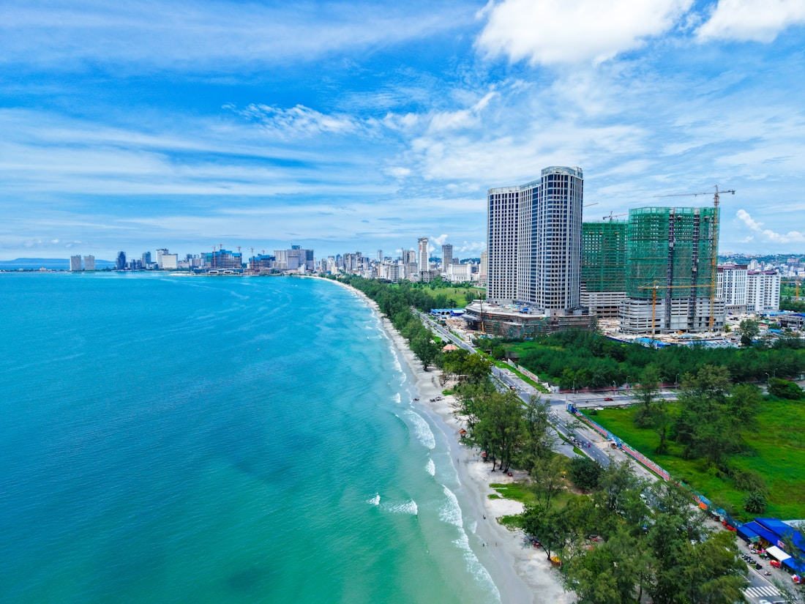
01 · CambodiaSihanoukville
Investor meetings for a digital tourism platform.
2 days →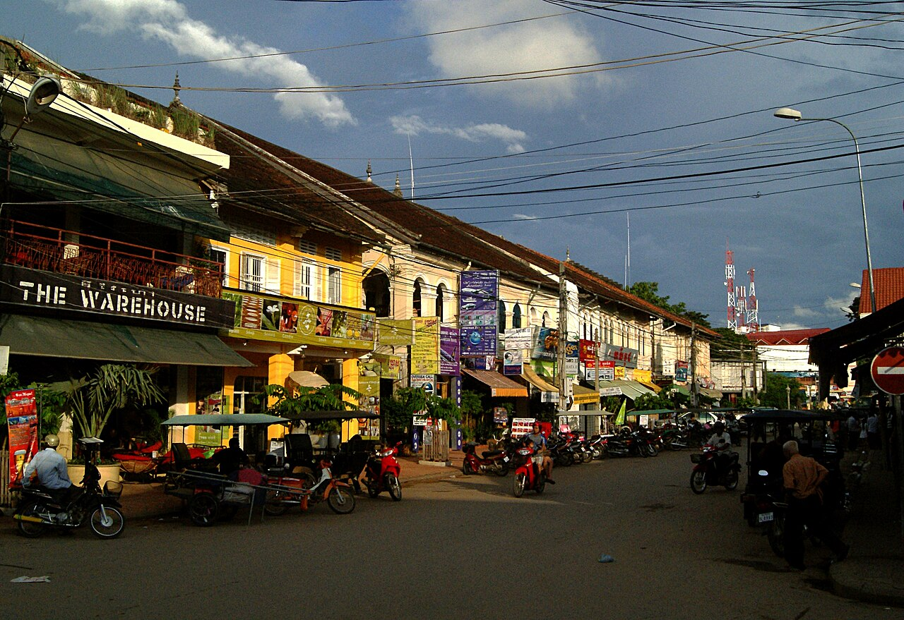
02 · CambodiaSiem Reap
Expansion location research for a new service hub.
5 days →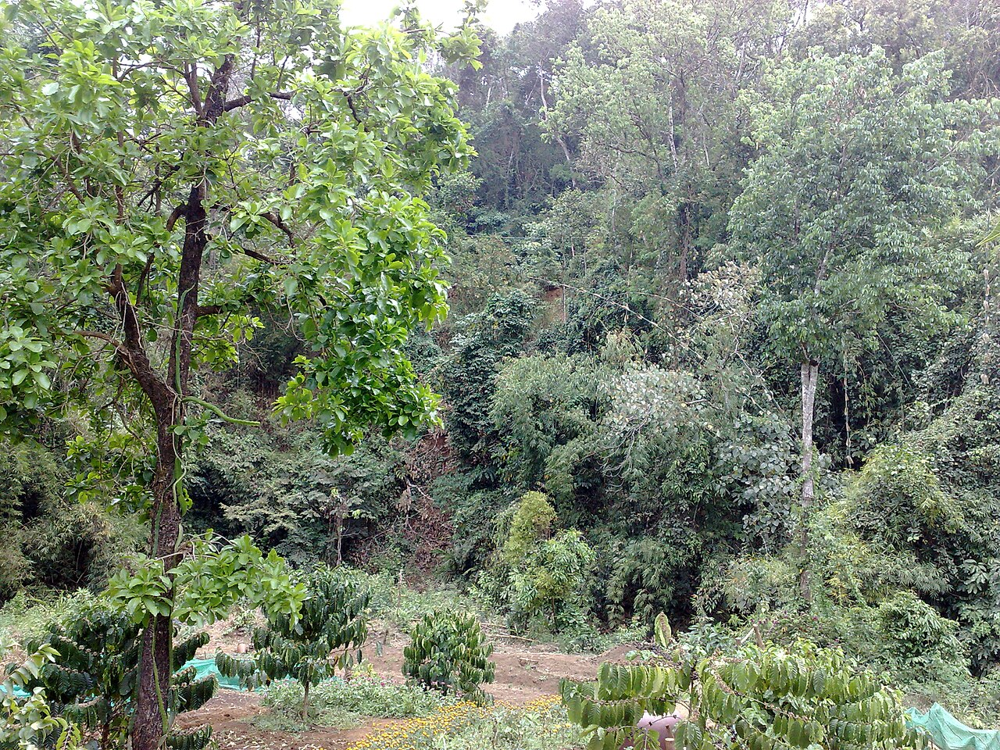
03 · CambodiaMondulkiri
A career interview for the company magazine.
3 days → 04 · MalaysiaKuala Lumpur
Artificial intelligence in the workplace conference.
3 days →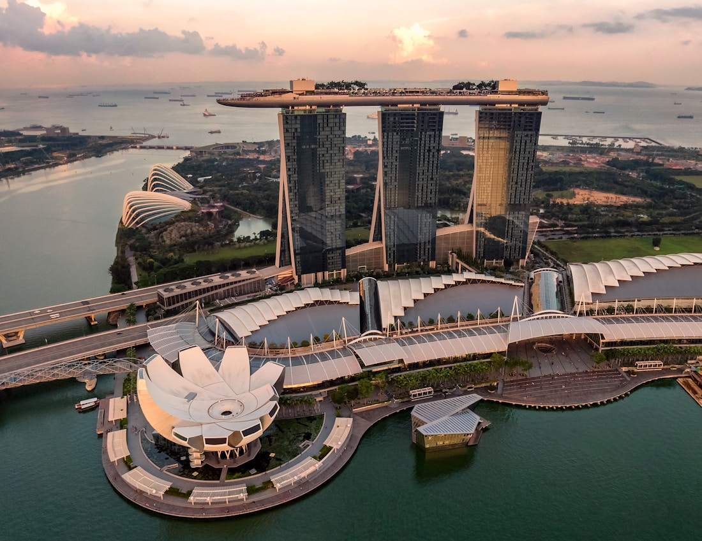
05 · SingaporeSingapore
Social media marketing research presentation.
2 days →Overview
Mekong Nexus Digital Co., Ltd. travelled to Sihanoukville to present its proposed CoastConnect platform: a multilingual service that brings accommodation operators, local transport providers, and visitors into one verified digital marketplace. The company sought US$180,000 in seed investment to complete product development, onboard the first 120 partners, and launch an 18 month pilot.
Hongkhy Kong led the presentation, Vansing Sun presented customer and market evidence, and Rithrolendo Ouk explained the financial model. The trip was important because local investor feedback would test whether the platform's revenue assumptions and coastal market positioning were credible before the company approached a wider funding network.
Objectives
- Present the CoastConnect investment proposal to two potential investors.
- Obtain feedback on the funding structure, projected returns, and local market risks.
- Inspect port and resort area tourism activity relevant to partner onboarding.
- Agree clear next actions for a possible second round discussion.
Daily itinerary
| Day | Time | Activity & location | Outcome |
|---|---|---|---|
| 1 · 12 Feb | 08:00 to 16:30 | Travel, hotel check in, and presentation preparation | Materials checked and meeting roles confirmed. |
| 1 · 12 Feb | 17:00 to 18:30 | Meeting with Mr. Dara Vannak, Coastal Development Partners, at Sokha Beach Resort | Investor requested a three year cash flow forecast. |
| 2 · 13 Feb | 09:30 to 11:00 | Meeting with Ms. Lina Sok, Mekong Capital Ventures, at Sihanoukville Autonomous Port | Investor requested evidence of partner demand and data security controls. |
| 2 · 13 Feb | 14:00 to 18:30 | Feedback review and return to Phnom Penh | Follow up package assigned to the project team. |
Highlights and findings
Mr. Dara Vannak considered the subscription and commission model appropriate for small tourism providers but asked the company to demonstrate its break even point under conservative booking volumes. Ms. Lina Sok was interested in the platform's verified provider feature and proposed that the pilot begin with hotels near the port; her primary concern was whether enough operators would share accurate availability data.
Both objectives were achieved: the company received practical due diligence requirements rather than a final commitment. The port inspection also confirmed a visible need for coordinated visitor information. The team decided to refine the financial forecast, complete a partner interest survey, and return with a staged investment proposal within four weeks.
Expenses
| Item | Quantity | Unit cost | Total |
|---|---|---|---|
| Minivan transport | 1 | $145 | $145 |
| Hotel rooms | 3 rooms × 1 night | $48 | $144 |
| Meals | 3 people × 2 days | $22 | $132 |
| Meeting materials | 1 set | $36 | $36 |
| Local transport | 1 trip | $38 | $38 |
| Total trip expense | $495 | ||
Conclusion and recommendations
The trip successfully moved CoastConnect from an internal proposal to an investment ready opportunity with specific evidence requirements. No agreement was signed, but both meetings created credible paths to continued discussion.
Business insight: The next investment decision depends on proving partner demand and a sustainable revenue model, not on a larger marketing promise.
- Submit a conservative three year forecast to Coastal Development Partners.
- Conduct a signed interest survey with 30 tourism providers.
- Document data privacy, verification, and platform security procedures.
- Schedule follow up meetings by 13 March 2026.
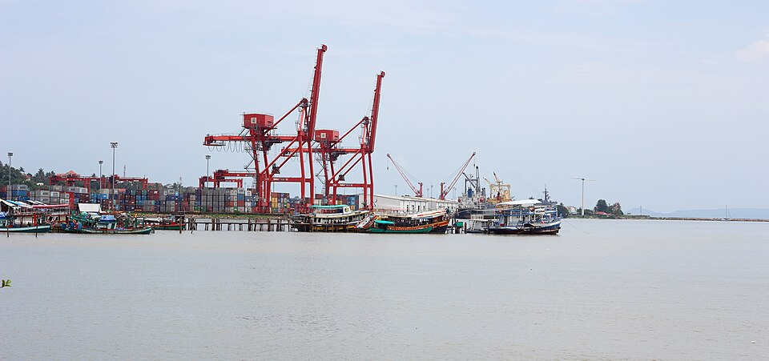
Overview
Growth in client requests from tourism, hospitality, and small retail businesses led Mekong Nexus Digital to evaluate a small Siem Reap service hub. The team assessed five commercially distinct areas using customer traffic, rent, visibility, accessibility, parking, competition, and long term development potential.
Each location was visited during relevant business hours. Hathkonnarak Ya recorded property and traffic observations, Thon Lay interviewed nearby operators, and Chhengthai Pheav compared rental quotations. The research aimed to identify a practical location for training workshops, client meetings, and a five person service team.
Objectives
- Compare five shortlisted commercial areas against the same criteria.
- Collect rental quotations and observe customer patterns.
- Identify competitor density and access constraints.
- Recommend a location supported by evidence rather than preference.
Five day itinerary
| Day | Area / activity | Key result |
|---|---|---|
| 1 | Market briefing and Old Market observation | High tourist footfall, but narrow access and premium rents. |
| 2 | Pub Street visits and owner interviews | Excellent visibility but intense hospitality competition. |
| 3 | National Road 6 commercial property inspection | Strong access, parking, and scalable space options. |
| 4 | Wat Bo and Taphul Village comparison | Wat Bo offered local demand; Taphul was affordable but less visible. |
| 5 | Evidence review and recommendation | National Road 6 selected for the next leasing discussion. |
Location comparison
| Location | Traffic | Monthly rent | Access / parking | Competition | Rating |
|---|---|---|---|---|---|
| Old Market | Very high | $1,450 | Limited | High | 3 / 5 |
| Pub Street | Very high | $1,850 | Poor | Very high | 3 / 5 |
| National Road 6 | High | $920 | Excellent | Medium | 5 / 5 |
| Wat Bo | Medium | $760 | Good | Medium | 4 / 5 |
| Taphul Village | Medium | $610 | Average | Medium | 3 / 5 |
Trip highlights and findings
National Road 6 was the strongest location because it combined high vehicle visibility with straightforward access and parking. Interviews at Pub Street confirmed its high visitor traffic but showed that evening focused hospitality competition and premium rent would make a small service office difficult to sustain. Wat Bo offered a valuable alternative because it served both local residents and long stay visitors.
Trip expenses
| Item | Quantity | Unit cost | Total |
|---|---|---|---|
| Return domestic airfare | 4 tickets | $95 | $380 |
| Hotel rooms | 4 rooms × 4 nights | $38 | $608 |
| Meals | 4 people × 5 days | $20 | $400 |
| Local survey transport | 5 days | $35 | $175 |
| Survey and printing materials | 1 set | $55 | $55 |
| Total trip expense | $1,618 | ||
Conclusion and recommendations
National Road 6 is recommended because it offers convenient customer access, available parking, lower rent than the tourism core, and enough space to grow. Pub Street and Old Market would provide visibility but their high rents and dense competition make them unsuitable for a service led office. The five day study achieved its purpose: the evidence indicates that a National Road 6 location can attract both local business customers and visiting clients without relying solely on seasonal tourist traffic.
Business insight: A National Road 6 hub can serve local clients and visitors while keeping the expansion cost controlled.
- Request a six month lease option for the shortlisted National Road 6 property.
- Test demand through two free digital skills workshops in Siem Reap.
- Prepare a modest local partnership plan with hotels and retailers.
- Retain Wat Bo as the alternative site in negotiations.
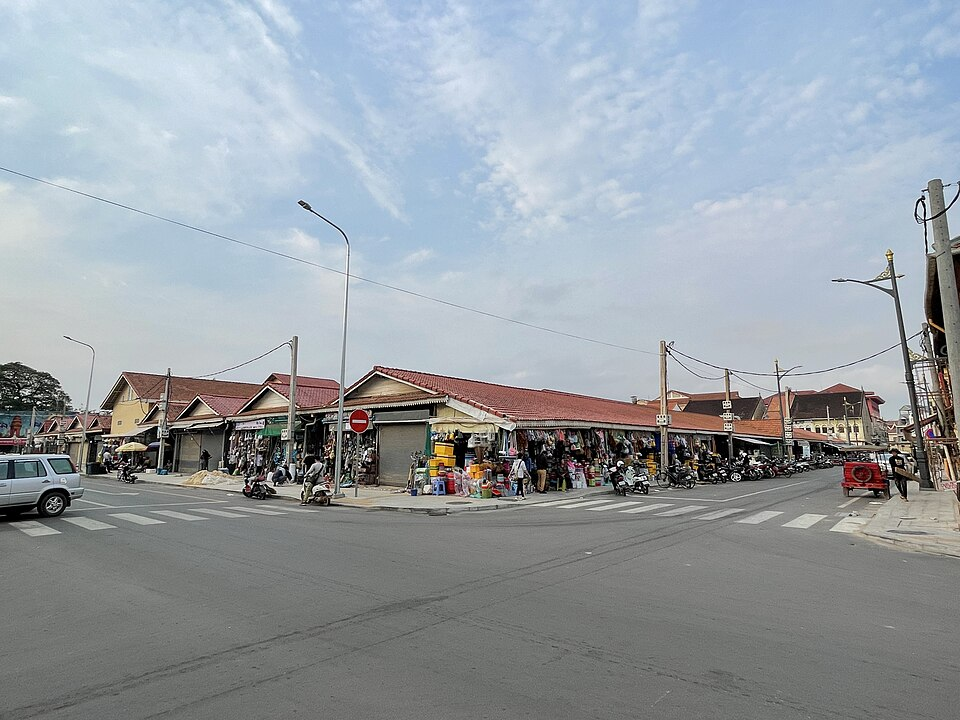
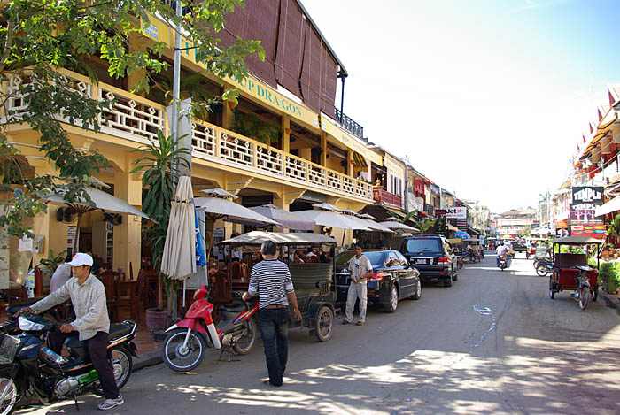
Overview
The company selected retired Senior Operations Manager Mr. Chenda Rith for a feature in its internal magazine because his 32 year career connected the organisation's early manual workflows with its later digital transition. The interview, address, and quotations in this academic report are fictional, created only for assignment purposes.
Vansing Sun arranged the interview and led the discussion; Thon Lay recorded the conversation and photographed approved materials; Rithrolendo Ouk verified the career timeline. The team collected a recorded interview, scanned photographs of old project documents, and permission to use selected quotations in the proposed article.
Interview focus and itinerary
| Day | Activity | Outcome |
|---|---|---|
| 1 | Travel to Sen Monorom; equipment and question review | Interview protocol and consent notes prepared. |
| 2 | Home interview, portrait session, document review | Recorded career history and three usable stories. |
| 3 | Follow up questions and quotation confirmation | Facts verified; article outline agreed before return. |
Key highlights
Mr. Rith described leading a warehouse recovery project after severe supply disruption, when he reorganised deliveries with local teams and kept customer commitments despite limited resources. He was most proud of mentoring junior staff who later became supervisors. His account highlighted that operational discipline, respect, and clear communication can matter as much as technical expertise.
“Success in the workplace does not come only from technical skill. It comes from patience, discipline, and respect for colleagues.” Mr. Chenda Rith
“When the company changed, I learned that experience is valuable only when you are willing to share it.” Mr. Chenda Rith
Findings, conclusion, and recommendations
The trip produced complete source material for a human centred magazine feature: verified career milestones, a recorded interview, environmental portraits, and two approved quotations. It also showed the value of preserving staff stories before their operational knowledge is lost.
Business insight: Preserving experienced employees' stories can turn individual knowledge into a long term training resource for the company.
- Publish the feature with a sidebar on Mr. Rith's mentoring advice.
- Create a quarterly oral history interview series with retired employees.
- Store approved recordings and scanned documents in the company archive.
- Invite Mr. Rith to a virtual mentoring session for junior staff.
Expenses
| Item | Quantity | Unit cost | Total |
|---|---|---|---|
| Transport | 3 return tickets | $68 | $204 |
| Hotel rooms | 3 rooms × 2 nights | $34 | $204 |
| Meals | 3 people × 3 days | $20 | $180 |
| Recording and photography materials | 1 set | $74 | $74 |
| Total trip expense | $662 | ||
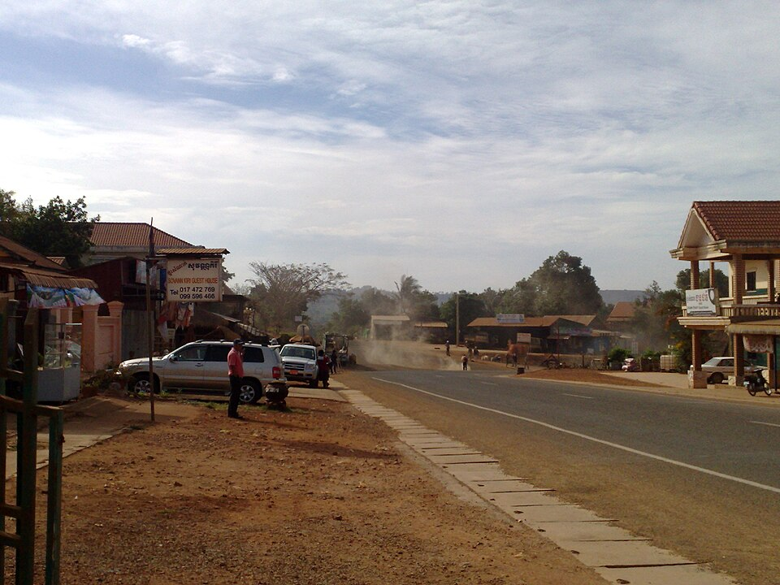
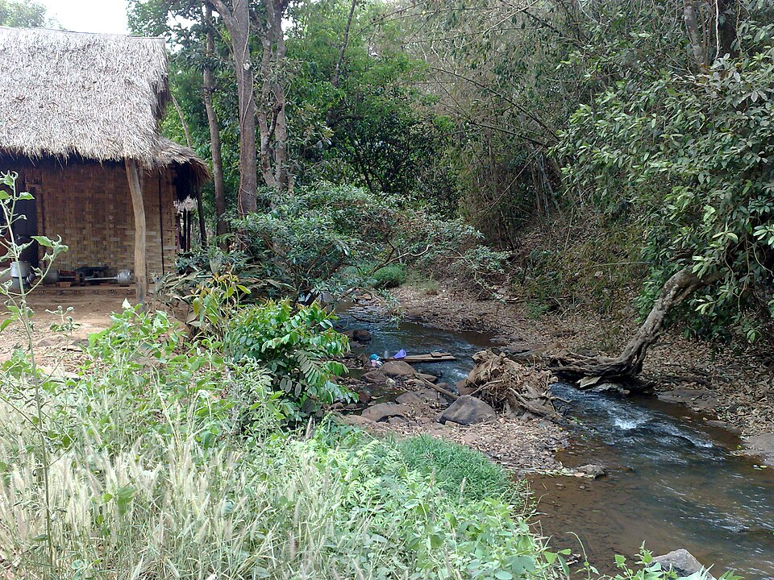
Overview
Mekong Nexus Digital sent a three person team to the fictional International Conference on AI in the Workplace 2026 to evaluate practical uses of generative AI, analytics, and automation for a growing consulting business. The conference brought together HR leaders, technology vendors, researchers, and policy specialists from 18 countries.
The team attended the opening keynote, a generative AI productivity workshop, sessions on AI assisted recruitment and customer service, and a panel on data protection. Demonstrations showed how well designed AI workflows can reduce repetitive drafting and categorisation work while preserving human review for sensitive decisions.
Sessions and highlights
| Day | Session | Important learning |
|---|---|---|
| 1 | Keynote: The future of AI at work | AI adoption succeeds when job redesign and staff training happen together. |
| 2 | Generative AI productivity workshop | Reusable prompts and review checklists improve consistency. |
| 2 | Privacy, ethics, and employee trust panel | Confidential data must stay out of unapproved systems. |
| 3 | Vendor demonstrations and closing forum | Small pilot projects are safer than company wide rollouts. |
Findings and outcomes
The strongest opportunity is to use approved AI tools for first drafts of proposals, meeting summaries, FAQ responses, and campaign data categorisation. These uses can reduce administrative effort, but output quality remains dependent on staff expertise. The team also identified risks: inaccurate content, bias in recruitment decisions, privacy breaches, and employees relying on systems they do not understand.
The trip objectives were achieved because the team returned with a practical adoption path rather than only broad awareness. The company should position AI as a support tool, keep managers accountable for decisions, and build training around responsible use.
Conclusion and recommendations
Business insight: A limited pilot with human review will let the company improve productivity without putting client trust or confidential data at risk.
- Adopt a written AI use policy with data classification rules.
- Run a 60 day pilot for proposal drafting and internal meeting summaries.
- Require human approval for all client facing and employment related output.
- Provide staff training on prompting, verification, privacy, and bias.
- Review pilot results against productivity, accuracy, and employee feedback.
Expenses
| Item | Quantity | Unit cost | Total |
|---|---|---|---|
| Return airfare | 3 tickets | $275 | $825 |
| Conference registration | 3 delegates | $320 | $960 |
| Hotel rooms | 3 rooms × 3 nights | $72 | $648 |
| Meals and local travel | 3 people × 3 days | $47 | $423 |
| Total trip expense | $2,856 | ||
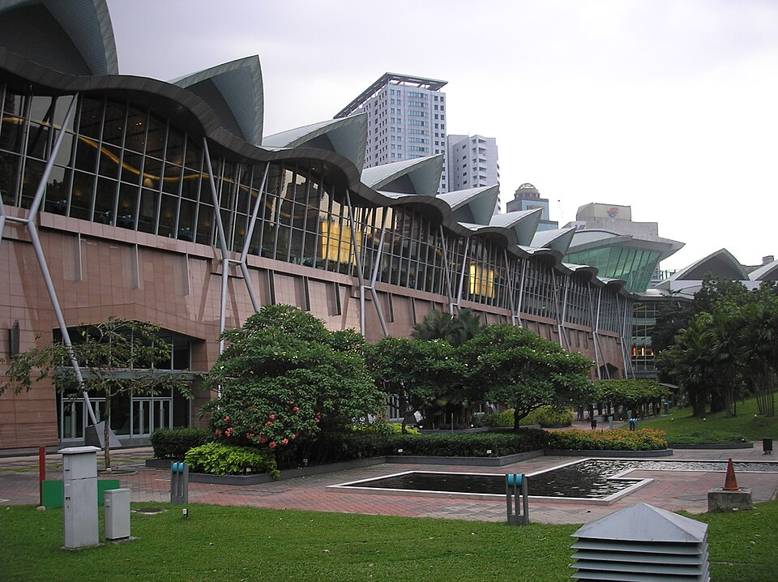
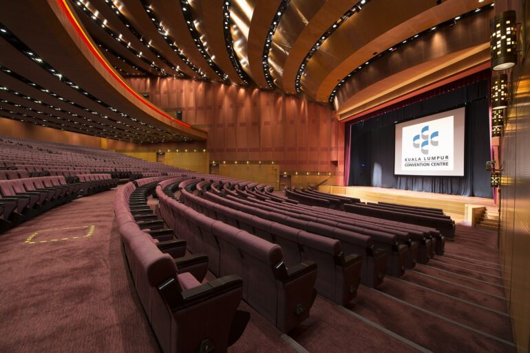
Overview
The team attended the fictional International Business Research Presentation on Social Media Marketing 2026 to translate recent research into a more effective approach for Mekong Nexus Digital and its clients. The two day event examined consumer behaviour, platform strategy, paid advertising, social media analytics, short form video, customer trust, and influencer partnerships.
Vansing Sun focused on consumer and platform research, Thon Lay attended content and creator sessions, and Rithrolendo Ouk reviewed the analytics and return on investment presentations. The team compared how research conclusions could be applied in Cambodia without assuming that a global trend fits every local audience.
Presentation itinerary
| Day | Activity | Outcome |
|---|---|---|
| 1 | Opening research presentation and consumer behaviour session | Authenticity and relevance were stronger drivers than posting volume. |
| 1 | TikTok and Instagram marketing presentations; networking reception | Short form video works best when adapted to platform habits. |
| 2 | Analytics workshop and influencer marketing panel | Clear conversion goals and brand fit checks are essential. |
| 2 | Case study discussion and team synthesis | Drafted a four metric content measurement framework. |
Findings and conclusion
The research consistently showed that short form video can create strong reach, but reach alone does not prove business value. Effective campaigns pair authentic creative work with a defined audience, a clear call to action, and measurement of engagement, conversion, reach, and return on advertising spend. TikTok and Instagram are useful for visual discovery, while LinkedIn better supports professional services credibility.
Influencer partnerships can improve trust when the creator's audience genuinely matches the brand. However, unverified claims, poor disclosure, and a mismatch between creator and company can damage credibility. The event therefore gave the team an evidence based basis for a more disciplined content strategy.
Conclusion and recommendations
Business insight: The company should measure meaningful customer actions, not only views, before increasing its social media budget.
- Plan content separately for TikTok, Instagram, Facebook, and LinkedIn.
- Prioritise short, helpful videos that demonstrate a real customer problem.
- Set campaign objectives before spending on paid distribution.
- Use a four metric dashboard: reach, engagement, conversion, and return on ad spend.
- Vet influencer partners for audience fit, disclosure practice, and brand safety.
Expenses
| Item | Quantity | Unit cost | Total |
|---|---|---|---|
| Return airfare | 3 tickets | $355 | $1,065 |
| Event registration | 3 delegates | $260 | $780 |
| Hotel rooms | 3 rooms × 2 nights | $130 | $780 |
| Meals and local transport | 3 people × 2 days | $58 | $348 |
| Total trip expense | $2,973 | ||
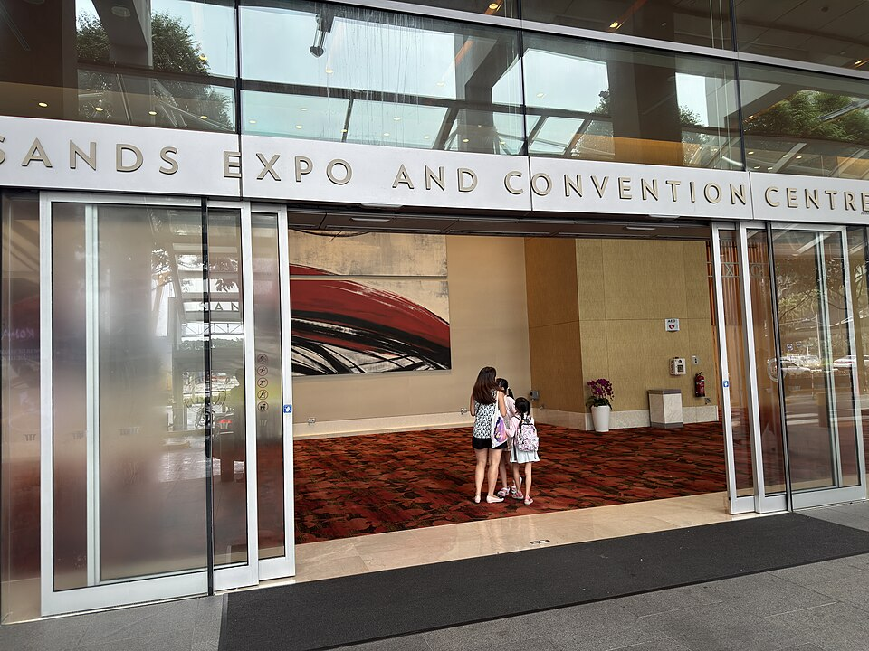
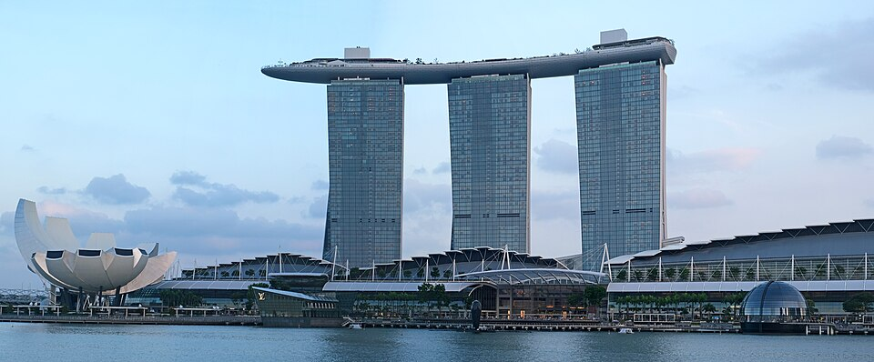
Prepared for submission
Group 5
Prepared for BUS 430 Section 4
Paragon International University
Submission date: 16 July 2026
All company names, people, events, quotations, addresses, costs, and report scenarios are fictional and have been prepared for academic purposes.